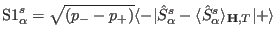
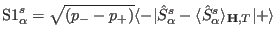

Next: External module function mqcalc Up: Module Functions for Observables Previous: External module function Scalc Contents Index
In order to visualize spin fluctuations and to calculate neutron intensities
in dipole approximation the external single ion module has to provide the transition
matrix elements of the spin by the
vector  , which is given by:
.
, which is given by:
.
The format to be used is:
extern "C" int dS1(int & tn,double & T,Vector & Hxc,Vector & Hext,double * g_J,Vector & MODPAR, char ** sipffilename,ComplexVector & S1,float & maxE, ComplexMatrix & est)The meaning of the symbols follows exactly that of function dm1 and therefore not explained here.